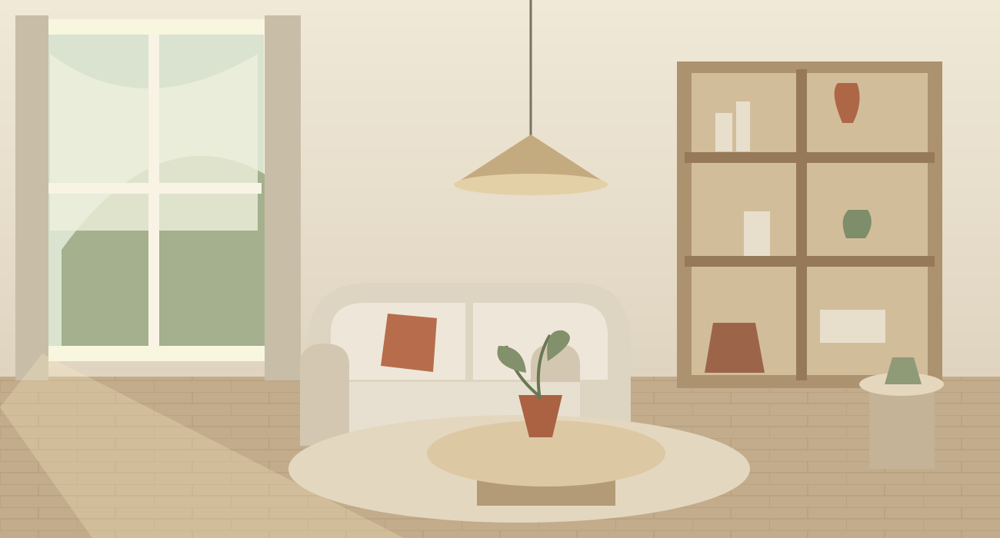

Residential design
Spatial planning, materials, lighting and the objects that turn a house into your home.
INTERIOR DESIGN STUDIO — AMSTERDAM
We design spaces
that feel inevitable.

THE PRINSENGRACHT RESIDENCE / CONCEPT STUDYSELECTED WORK
No projects match. Clear the search or choose another category.
Twelve fictional portfolio studies using original architectural illustrations and detail crops.
WHAT WE DO
Spatial planning, materials, lighting and the objects that turn a house into your home.
Spaces that speak your brand’s language, and work for the people who use them.
Considered styling that helps a space communicate its possibilities. Results vary; no sale outcome is promised.
HOW WE WORK
Scroll, swipe or use the arrow buttons to explore.
A deep conversation about your lifestyle, aesthetic instincts and the way you move through a space.
Mood boards, material palettes and spatial plans. A clear direction before a single item is purchased.
Technical drawings, sourcing and custom pieces, documented before execution.
Coordinating the people, suppliers and decisions that bring a design to life.
Art, objects and finishing details. A space that feels complete, not merely finished.
Step 1 of 5
THE NOMA PERSPECTIVE
Inspired by the warmth of Scandinavian living and the character of Amsterdam, Studio Noma is an imagined practice for rooms that feel lived-in before they’re ever slept in.
Natural materials. Imperfect textures. A home that looks like you — not like a catalogue.
The brief imagines a studio founded by Sara Eriksson in Amsterdam. This static concept explores that ethos without asserting professional biographies, education or completed commissions.
AN EXERCISE IN MATERIALS
Tactile, relaxed and beautifully imperfect.
Select a swatch to explore our material notes.
EVERY SPACE DESERVES INTENTION
“Not a style imposed.
A story drawn out.”
A studio principle — not a client testimonial.
START A PROJECT
Every room tells a story. Let’s find yours.
A browser-only preview. No message is sent or appointment reserved.